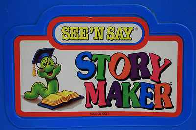

See 'N Say Storymaker

Step 1: Select a surprising random phrase by clicking on each button.
Pick a Noun
Pick a Verb
Pick an Adjective
Pick another Noun
Pick a Place
Step 2: Listen to the created phrase:
Click on here to listen!!!
Step 3: Here's your generated story:
Repeat the step 1 to create a new story.